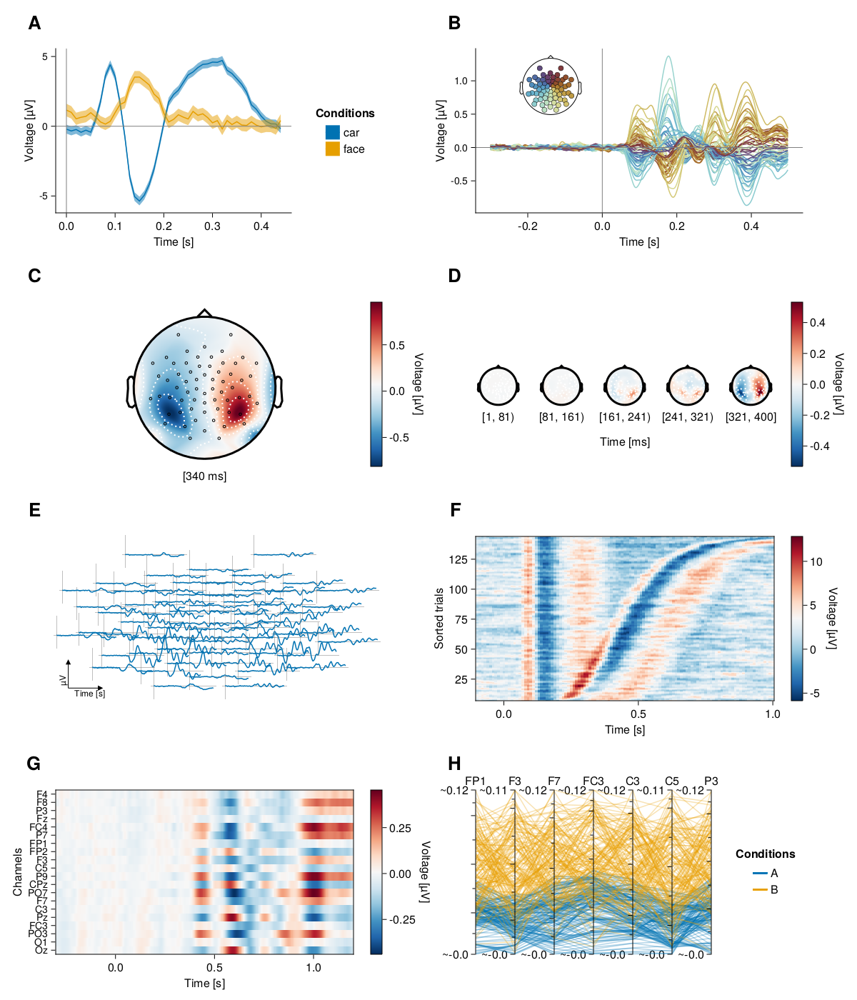

Highlights of UnfoldMakie.jl
UnfoldMakie.jl excels in various fields:
Focused.
UnfoldMakie.jlfocuses exclusively on visualizing (r)ERPs, unlike other toolboxes such asEEGLAB,FieldTrip,Brainstorm, orMNE. This makes it easier to understand, use, and maintain the package in the future.Customizable. The majority of EEG researchers perceive the flexibility of coding as the most important feature of the EEG toolbox. Consequently, users
UnfoldMakie.jlhave great flexibility in customizing most aspects of the plots, such as colors, line styles, and axis decorations.Combining plots. The layout system for subplots in
Makie.jlmakes it easy to combine and align various plot types.Flexible mapping. With
AlgebraOfGraphics.jl, it is easy to map conditions, groups, channels, or other features, to a large variety of aesthetics like linestyle, color, marker and others. It works similar to the popular R packageggplot2.Flexible data input. All functions support basic
Arraysand tidyDataFrames.Fast. Julia and
Makie.jlallows fast plotting of figures with very complex layout. As an example, it is able to plot one figure with 50 topoplots in 1.9 seconds (1.6 sec with DelaunayMesh interpolation), which is ~20 times faster, compared toEEGLAB. Although, the Python-basedMNEis faster by one second. For more details check this pageFaster updating.
Makie.jlis incredibly fast at updating figures, which is beneficial for developing interactive tools and creating animations.UnfoldMakie.jlcan create and save a topoplot gif file with 50 frames in 1.7 times less time thanMNE(Table 2).Interactive. Several plots in our package have interactive features. They are supported by
Observables.jl, which allows for fast data exchange and quick plot updating.Scientific color maps. According to our previous study (Mikheev, 2024), 40% of EEG researchers are not aware of the issue of perceptually non-uniform color maps.
UnfoldMakie.jluses scientific color maps throughout.Documented. There is extensive documentation with many usage examples and docstrings.